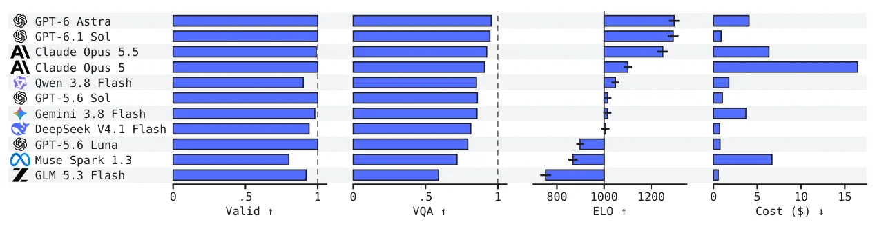
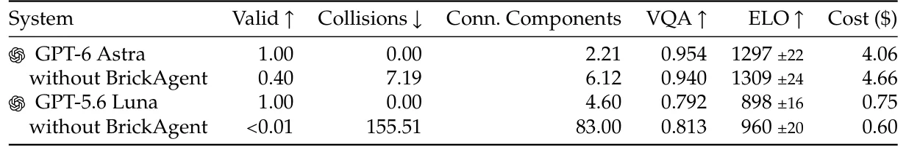
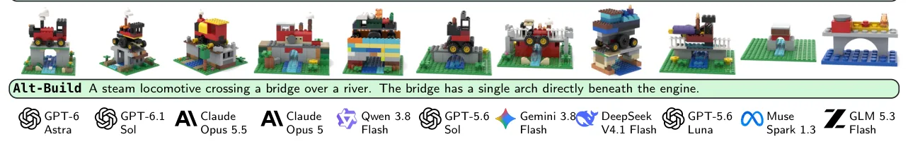

O problema: gerar LEGO é mais difícil do que parece
Projetar uma montagem LEGO exige escolher entre milhares de peças, organizá-las em uma forma reconhecível e garantir que a estrutura se sustente fisicamente. Modelos generativos especializados vinham sendo treinados para essa tarefa com representações cuidadosamente engenheiradas. Mas agentes de código — sistemas de linguagem que escrevem programas, executam, inspecam resultados e revisam — oferecem uma abordagem diferente, sem treinamento específico para a tarefa.
Os autores mostram que um agente geral de código supera substancialmente modelos especializados no benchmark BrickNet, chegando perto do alinhamento semântico das montagens de referência. Mas isso levanta uma questão: será que agentes realmente aprenderam a projetar LEGO? Avaliações existentes deixam dois desafios inexplorados. Primeiro, complexidade física: BrickNet avalia objetos pequenos, com no máximo 100 peças, longe das centenas ou milhares de peças interconectadas e restrições de inventário de um set LEGO completo.
Segundo, e mais fundamental, qualidade de design. Fazer uma montagem que funciona não é o mesmo que fazer uma montagem que vale a pena construir. O apelo do LEGO está não apenas em reproduzir um objeto, mas na criatividade da construção: uso inteligente de peças, formas, proporções e detalhes. Duas montagens podem ser igualmente válidas e fiéis a uma descrição, mas diferir dramaticamente em quão bem são projetadas. Diferente de validade física ou alinhamento semântico, qualidade de design não tem teste definitivo de aprovação ou reprovação.
BrickBench: três cenários, 300 prompts, validação física
O paper introduz BrickBench, um benchmark para design agentico de sets LEGO condicionado a texto. O benchmark contém 300 prompts distribuídos em três cenários: Model (no máximo 400 peças), Set (entre 400 e 4000 peças) e Alt-Build (inventário fixo de peças do set 10698). Cada cenário impõe restrições diferentes de escala e disponibilidade de peças.
Para suportar construção complexa, os autores criaram BrickAgent, um ambiente para design agentico de LEGO que inclui ferramentas de construção e validação interpretável de conectividade, colisões e estabilidade. Em vez de prescrever como projetar uma montagem, BrickAgent fornece os blocos de construção, restrições e feedback, deixando o agente criar sua própria solução.
A validação física é rigorosa. Conectividade verifica se cada peça está ligada ao resto da montagem através de conexões válidas — studs (os pinos redondos), axles (eixos) ou outros conectores reconhecidos na biblioteca LDraw. Colisões detectam quando geometrias de peças se sobrepõem além de uma tolerância mínima, tornando a montagem impossível de construir fisicamente. Estabilidade simula a montagem em PyBullet: componentes conectados são tratados como corpos rígidos com densidade uniforme, alto coeficiente de fricção e sem restituição. Um componente falha se qualquer ponto se mover mais de três quartos da altura de um stud — 3 unidades LDraw — durante a simulação.
Agentes gerais superam modelos especializados no BrickNet
Antes de avaliar BrickBench, os autores testaram GPT-5.6 Luna no conjunto de validação do BrickNet, que contém 512 legendas de objetos únicos com no máximo 100 peças cada. As legendas foram geradas por um modelo visão-linguagem sobre renders de montagens existentes. O agente recebeu o ambiente descrito depois, com limite de 100 peças para corresponder ao BrickNet.
Os resultados mostram que o agente geral, sem ter sido treinado no dataset, supera substancialmente os baselines especializados BrickNet e BrickGPT. O GPT-5.6 Luna pontuou dentro de 0.02 das montagens de referência (GT) em cada métrica — PE, SigLIP 2 e VQAScore — efetivamente saturando a avaliação. PE e SigLIP 2 medem a similaridade entre embeddings dos renders e da legenda; VQAScore mede a probabilidade de um modelo VQA responder sim quando perguntado se os renders mostram a legenda.
Essa saturação motivou o design de um novo benchmark. Se agentes gerais já resolvem montagens pequenas e simples, o próximo passo é avaliar complexidade física real e, crucialmente, qualidade de design — algo que métricas automáticas de alinhamento não capturam.

Três métricas: validade, alinhamento semântico e design
BrickBench avalia três dimensões. Validade física verifica se a montagem pode ser construída: todas as peças conectadas, sem colisões e estável sob simulação. Alinhamento semântico usa VQAScore: cada prompt é decomposto em perguntas sim/não e um modelo VQA responde sobre renders da montagem. A pontuação é a fração de perguntas respondidas corretamente.
Qualidade de design é medida por ELO, calculado a partir de comparações pareadas. Um modelo visão-linguagem compara duas montagens para o mesmo prompt e escolhe qual é melhor projetada. Os autores validaram essas comparações contra avaliadores humanos, garantindo que o julgamento automático reflete preferências reais.
Essa terceira métrica é essencial. Duas montagens podem ser válidas e semanticamente corretas, mas uma pode usar peças de forma mais criativa, ter proporções melhores ou detalhes mais interessantes. Essa diferença — o que torna uma montagem digna de ser construída — é o que separa agentes de designers humanos.
BrickAgent: o ambiente faz toda a diferença
BrickAgent oferece ferramentas para construção programática: busca de peças, posicionamento por conectores, submontagens, renderização e um validador que nomeia peças problemáticas. O agente escreve código Python que chama essas ferramentas, executa, inspeciona o resultado e revisa.
Para medir o impacto do ambiente, os autores fizeram uma ablação: rodaram os mesmos agentes sem as ferramentas, apenas gerando código que tenta construir diretamente. Os resultados são dramáticos. Com BrickAgent, GPT-6 Astra produz montagens válidas em 100% dos prompts. Sem o ambiente, essa taxa cai para 40%. Para GPT-5.6 Luna, a queda é ainda mais severa: de 100% para menos de 1%.
Isso mostra que construção confiável depende de ferramentas fundamentadas e feedback interpretável. Agentes não conseguem raciocinar sobre restrições físicas complexas apenas gerando código no vazio. Eles precisam de um loop de execução, inspeção e validação para iterar até uma solução válida.

Onze agentes, dois baselines: validade alta, design ainda distante
Os autores avaliaram onze agentes de fronteira e dois baselines orientados a dados. Agentes líderes produzem montagens válidas para quase todos os prompts. O melhor satisfaz aproximadamente 95% dos requisitos semânticos medidos por VQA. Isso representa um salto em relação a modelos especializados: agentes gerais deslocam sistemas treinados especificamente para LEGO.
Mas esse desempenho vem com custo. Os agentes aumentam o custo computacional em 900 a 6800 vezes em relação aos baselines orientados a dados. Eles iteram, revisam, validam — um processo caro, mas que permite satisfazer restrições físicas complexas sem treinamento específico.
Qualidade de design, porém, separa os agentes muito mais fortemente. Avaliadores humanos identificaram montagens projetadas por humanos em 323 de 360 comparações. Isso revela uma mudança no desafio do design de LEGO: agentes estão aprendendo a construir o que funciona, mas ainda não o que faz um ótimo design.

O que falta: criatividade, não correção
A diferença entre agentes e humanos não está em satisfazer requisitos verificáveis. Agentes conseguem fazer isso. A diferença está na criatividade da solução: escolher peças inesperadas, criar formas elegantes, adicionar detalhes que tornam a montagem interessante.
Esse é um desafio aberto. Métricas de alinhamento semântico saturam rapidamente: se a montagem tem as partes certas nos lugares certos, a pontuação é alta. Mas isso não captura se a montagem é bem projetada. Comparações pareadas ajudam, mas dependem de julgamento humano ou de modelos visão-linguagem calibrados contra humanos.
Os autores destacam que o domínio LEGO oferece um piso que um simulador pode verificar — validade física — e um teto aberto em qualidade de design. Isso torna o benchmark útil para medir progresso em duas frentes: capacidade de satisfazer restrições complexas e capacidade de criar soluções criativas e esteticamente agradáveis.
Implicações: agentes como ferramentas, não substitutos
Os resultados sugerem que agentes de código podem ser ferramentas poderosas para designers, não substitutos. Eles conseguem gerar rapidamente montagens válidas que atendem requisitos semânticos, economizando tempo na fase de prototipagem. Mas o refinamento criativo — o que torna uma montagem memorável — ainda requer intervenção humana.
Essa divisão de trabalho é promissora. Designers podem usar agentes para explorar o espaço de soluções válidas rapidamente, depois iterar manualmente sobre as mais promissoras. O ambiente BrickAgent, com ferramentas de construção e validação, pode ser adaptado para outras tarefas de design generativo com restrições físicas.
O paper também mostra a importância de benchmarks que vão além de métricas de correção. Validade e alinhamento semântico são necessários, mas não suficientes. Qualidade de design — difícil de definir, mas fácil de reconhecer — é o que separa sistemas úteis de sistemas excelentes. BrickBench oferece uma estrutura para medir isso de forma reproduzível.
Limitações e trabalho futuro
O paper é honesto sobre o que não resolve. Simulação física não modela forças de conexão ou deformação de peças, então montagens que passam no teste podem ceder ou desmoronar na prática. Avaliar isso exigiria simulação estrutural com limites de força em cada conexão ou modelos de elementos finitos das peças.
Qualidade de design é medida por comparações pareadas, mas preferências estéticas variam. O que um avaliador considera criativo, outro pode achar exagerado. Os autores validaram julgamentos automáticos contra humanos, mas reconhecem que isso não captura toda a diversidade de gostos.
Custo computacional é outro limite prático. Agentes aumentam o custo em centenas a milhares de vezes em relação a modelos especializados. Para aplicações em larga escala, isso pode ser proibitivo. Trabalho futuro pode explorar como destilar o raciocínio de agentes em modelos menores e mais rápidos, mantendo a capacidade de satisfazer restrições complexas.
O que fica
- BrickBench avalia agentes em 300 prompts LEGO com validação física rigorosa (conectividade, colisões, estabilidade) e métricas de alinhamento semântico e qualidade de design.
- Agentes líderes produzem montagens válidas em quase 100% dos casos e satisfazem ~95% dos requisitos semânticos, mas humanos preferem designs humanos em 90% das comparações.
- O ambiente BrickAgent é essencial: sem ele, validade cai de 100% para 40% (GPT-6 Astra) ou <1% (GPT-5.6 Luna), mostrando que ferramentas e feedback são críticos.
- Custo aumenta 900–6800× vs. modelos especializados, mas agentes gerais deslocam sistemas treinados especificamente para LEGO sem precisar de dados de treinamento.
Paper original: BrickBench: Evaluating Agentic Brick Design
Comentários
Nenhum comentário ainda. Seja o primeiro.